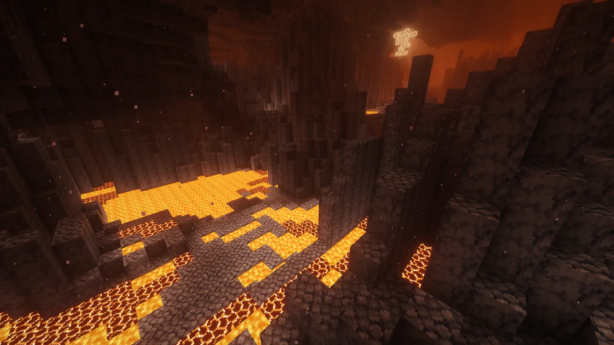

Retorcidos SMP
XYZ: 214 / 52 / −731
Aquí nadie te cuida la base
Lo que construyes lo defiendes tú y tu clan. El mundo tiene cuatro reglas:
-
Sin protecciones
No hay claims ni regiones. Si alguien encuentra tu base, puede entrar.
-
Sin /home
/spawnte lleva a la plaza y/volverte regresa una vez a donde estabas. Lo demás, a pie. -
Sin minimapas
Están prohibidos y el server apaga el de Xaero al entrar. Para ubicarte: mapa, brújula y memoria.
-
En difícil
Los zombis tiran puertas y el hambre sí mata. La dificultad no se baja.
Mantén presionado un mineral para picarlo.
XYZ: 0 / 30 / 0
Llegas a un pueblo con palacio
La plaza está frente al palacio: ahí están el mercado, las cuatro cajas, el Guardián que vende llaves y el Cronista del pase. Cuando estés listo, cruza el arco que dice «Al mundo» y apareces en un punto al azar del mapa.
El mapa del spawn es Village & Palace, de MRVLAD70.
XYZ: −388 / −24 / 1,052
Juega en clan
El nombre de tu clan sale en el chat, en la lista de jugadores y sobre tu cabeza, con su degradado. Entre miembros no se hacen daño.
- /clan crear
- Funda tu clan, con un nombre de hasta 12 letras.
- /clan invitar
- Suma a alguien; tiene dos minutos para aceptar.
- /cc
- Habla solo con tu clan.
- /clan tp
- Ve con un compañero, si acepta.
- /clan base
- Regresa a la base del clan.
- /clan color
- Elige el degradado: fuego, oro, océano, neón y más.
La barra de ubicación solo marca a los de tu clan. Los demás no saben dónde andas.
XYZ: 12 / −59 / −88
Al Nether
Del otro lado están las llaves, las cajas y Filo X.
Sigue bajandoXYZ: 2 / 96 / −11
Llaves y cajas
Cada día que entras te llega una llave común. Las demás caen de los mobs, se compran con esmeraldas o las sueltan los jefes. /cajas las abre desde donde estés.
Caja Común
Mismos premios y probabilidades que en el server. Aquí no te llevas nada.
| Llave | Mob hostil | Tienda del Guardián | Jefe |
|---|---|---|---|
| Común | 1 en 25 | 8 esmeraldas, 5 al día | — |
| Rara | 1 en 150 | 24 esmeraldas, 2 al día | Guardián anciano |
| Épica | 1 en 600 | 64 esmeraldas, 1 al día | Warden y Wither |
| Legendaria | 1 en 2,500 | No se vende | Dragón del End |
Botín sube la probabilidad. Los mobs de spawner no cuentan y hay un tope diario de llaves de mobs.

XYZ: 160 / 40 / −402
Filo X
En el yunque, dos piezas con el mismo encantamiento al máximo suben un nivel más: hasta Filo X, Eficiencia X o Protección VIII.
Yunque
Además hay 81 encantamientos nuevos en español, como Minero de vetas, Telequinesis o Leñador. Salen en la mesa de encantar, con los aldeanos y en las cajas.
XYZ: 4 / 30 / −9
Al End
Solo sirve el portal del spawn. Se abre para todos el día que se anuncie.
Sigue bajandoXYZ: 100 / 64 / 0
Un premio por cada día que juegas
Cada día distinto que entras se abre uno en /pase. No tienen que ser seguidos: si faltas una semana, sigues donde te quedaste. Toca un cuadro para ver qué trae.
Pase Retorcido
RETORCIDOS
9:41 pm
Clan Lobos
Días 23
Pase 23/60
Llaves 4
Conectados 12
Tu avance va siempre a la derecha de la pantalla. /marcador lo esconde.
XYZ: 1,630 / 72 / −248
Día 60: la Leyenda Retorcida
Filo Retorcido Filo VII Botín IV Aspecto ígneo II Filo arrasador IV Irrompibilidad V Reparación
Alas Retorcidas Irrompibilidad V Reparación
Y con ellas: dos llaves legendarias, tres tótems de la inmortalidad y un faro.
XYZ: 1,000 / 50 / 1,000
Entra hoy
Agrega el server en Multijugador (en Bedrock, en Servidores) y nos vemos en la plaza.
Versión 26.3. Si nadie está jugando, el server se duerme: entra desde Java, espera un minuto y vuelve a entrar. La primera vez, regístrate con /register.
Parabellum
El launcher gratis de la comunidad, para Windows y Mac.
- Tu skin, para todos. La que pones en Parabellum la ven todos en el server, también los de Bedrock.
- El modpack oficial. Sodium e ImmediatelyFast para más FPS, Iris para shaders, JEI y Jade; se instala solo.
- La comunidad. Las reglas y los anuncios de Retorcidos, donde abres el juego.